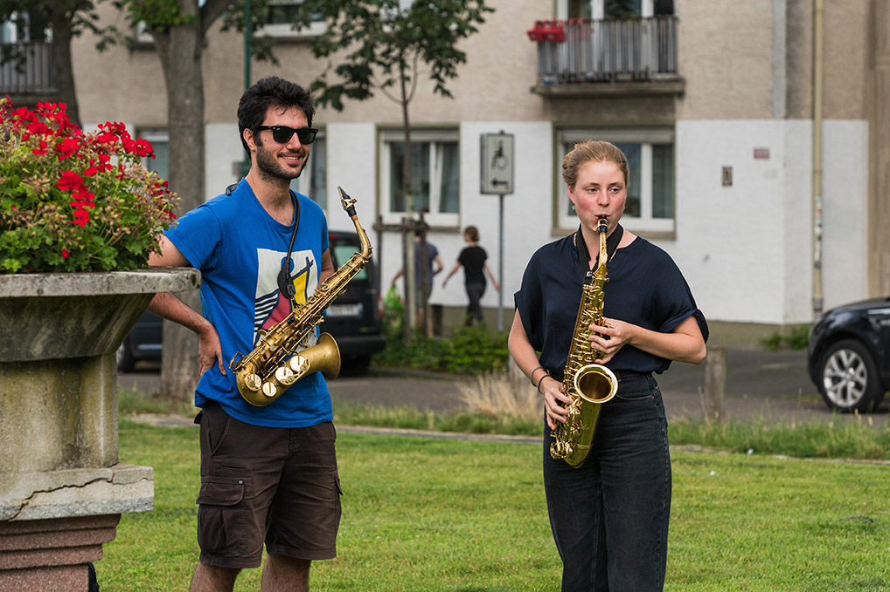

Projects
Pantelis is an active music educator, and his research has been presented in venues such as the International Saxophone Festival of Palmela and the Eastern European Film Bulletin He has premiered works by George Malefakis, Dimitrios Katharopoulos, Xander Benham and Harold Groenenboom among others. His diverse projects include a trio with George Kokkinaris and Dafni Mengou, Utrecht Experimental Ensemble and a duo with Perikles Makris. Additionally, he has been active as a session musician with the Giannis Biliris Rap Orchestra, The Groove Attack Big Band, Kalpikos and Johnny Labelle.
View repertoire list